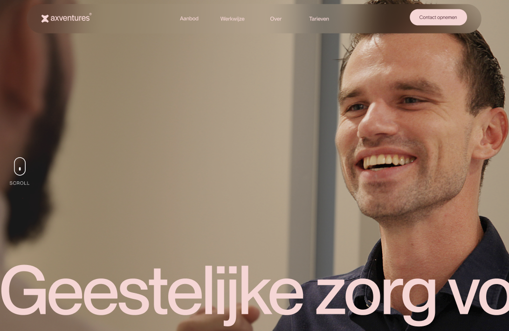
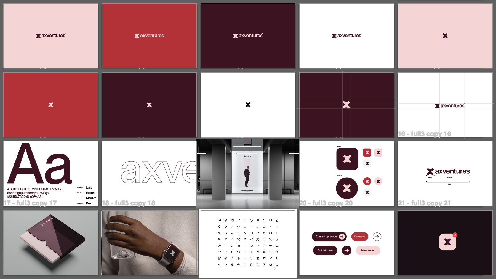

Role
UX UI designer
Timeline
4 weeks
Tools
Adobe Illustrator, Photoshop, Figma, After Effects
Type
Internship project
A professional website for a spiritual care practice supporting professional footballers and coaches.

UX UI designer
4 weeks
Adobe Illustrator, Photoshop, Figma, After Effects
Internship project
During my internship, I worked on the UX and branding for Axventures, an organization that provides spiritual guidance and personal development for professional football players. The objective was to create a modern digital experience that communicated trust, professionalism, and calmness while making the organization's services easy to understand.
The challenge was to translate a complex and personal subject into a clean, approachable website. Since the target audience consisted of professional athletes, coaches, and clubs, the design needed to feel credible, minimal, and engaging without overwhelming users with information. At the same time, the visual identity had to differentiate Axventures from traditional coaching or healthcare organizations.

Branding made before designing the site
The project began with developing the brand identity, establishing a visual style that reflected the organization's values of guidance, growth, and clarity. This foundation was then translated into the website design, where the focus was placed on usability, readability, and a calm visual experience.
I designed a clean and minimal interface using generous spacing, subtle typography, and a consistent color palette to create a sense of trust and focus. To make the experience feel more dynamic without distracting from the content, I incorporated smooth animations and interactive elements throughout the website. These micro-interactions helped guide users through the pages while adding a polished and modern feel.
The result was a user-centered website that balanced simplicity with engaging interactions, making the organization's message more accessible while reinforcing its professional identity.
Final site design Axventures
The design process started with researching comparable organizations, modern healthcare and coaching websites, and UX best practices for content-heavy platforms. This helped define a visual direction that combined professionalism with a welcoming user experience.
I explored multiple branding concepts before developing wireframes and high-fidelity interface designs. Throughout the project, designs were continuously refined through discussions with stakeholders and internal feedback sessions. This iterative process helped improve the information hierarchy, simplify navigation, and ensure the content remained the primary focus.
As the design evolved, I carefully integrated animations and interactive components to enhance usability rather than distract from it. This project strengthened my understanding of UX design, branding systems, and designing meaningful digital experiences that communicate complex ideas in a clear and accessible way.
Animation when opening site